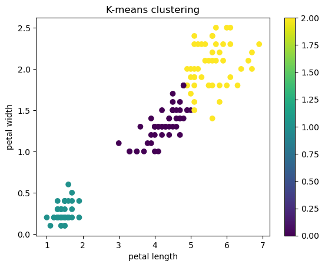
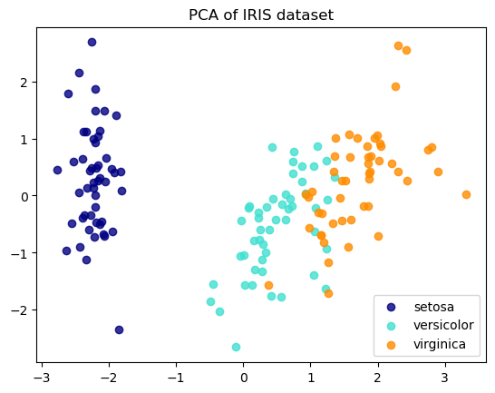

8.2. 教師なし学習#
8.2.1. クラスタリング#
8.2.1.1. K-means#
irisの特徴量petal_lengthとpetal_widthを用いて、クラスタリング手法の一つであるK-meansを使ってクラスタリングします
K-meansではクラスタの数を指定する必要があります。ここでは3つのクラスタを生成します。
import matplotlib.pyplot as plt
import pandas as pd
from sklearn import datasets
from sklearn.cluster import KMeans
from sklearn.decomposition import PCA
from sklearn.preprocessing import StandardScaler
%matplotlib inline
data = datasets.load_iris()
df = pd.DataFrame(data.data, columns=data.feature_names).reset_index(drop=True)
target = pd.DataFrame(data.target, columns = ['species']).reset_index(drop=True)
df = df.merge(target, left_index=True, right_index=True, )
df.head()
| sepal length (cm) | sepal width (cm) | petal length (cm) | petal width (cm) | species | |
|---|---|---|---|---|---|
| 0 | 5.1 | 3.5 | 1.4 | 0.2 | 0 |
| 1 | 4.9 | 3.0 | 1.4 | 0.2 | 0 |
| 2 | 4.7 | 3.2 | 1.3 | 0.2 | 0 |
| 3 | 4.6 | 3.1 | 1.5 | 0.2 | 0 |
| 4 | 5.0 | 3.6 | 1.4 | 0.2 | 0 |
X_iris=df[['petal length (cm)', 'petal width (cm)']]
model = KMeans(n_clusters=3) # k-meansモデル、n_clustersでクラスタの数を指定
model.fit(X_iris) # モデルをデータに適合
y_km=model.predict(X_iris) # クラスタを予測
/Users/yuyashibu/anaconda3/envs/iiimethodsiv/lib/python3.8/site-packages/sklearn/cluster/_kmeans.py:870: FutureWarning: The default value of `n_init` will change from 10 to 'auto' in 1.4. Set the value of `n_init` explicitly to suppress the warning
warnings.warn(
plt.figure()
plt.scatter(df['petal length (cm)'], df['petal width (cm)'], c = y_km)
plt.colorbar()
plt.xlabel('petal length')
plt.ylabel('petal width')
plt.title('K-means clustering')
plt.show()

8.2.1.2. PCA（主成分分析）次元削減#
高次元のデータの次元数を削減するために用いられることも多いです。
ここでは、irisデータの4つの特徴量を2次元にPCAを用いて削減します。
X = df.iloc[:, :4]
y = df['species']
PCAを実行する前に標準化します。
X = StandardScaler().fit_transform(X)
pca = PCA(n_components=2)
X_pca = pca.fit_transform(X)
X_pca[:2,:]
array([[-2.26470281, 0.4800266 ],
[-2.08096115, -0.67413356]])
X[:2,:]
array([[-0.90068117, 1.01900435, -1.34022653, -1.3154443 ],
[-1.14301691, -0.13197948, -1.34022653, -1.3154443 ]])
どのくらいデータを説明できているか、寄与率(explained_variance_ratio)を用いて確認します。
PCAの説明分散（または固有値）は、各主成分に帰属させることができる分散を示します。 各値は各主成分の分散に等しく、配列の長さは n_components で定義された成分の数に等しくなります。
print(pca.explained_variance_ratio_)
[0.72962445 0.22850762]
第一主成分と第二主成分をプロットしましょう。
colors = ['navy', 'turquoise', 'darkorange']
target_names = ['setosa','versicolor','virginica']
for color, i, target_name in zip(colors, [0, 1, 2], target_names):
plt.scatter(X_pca[y == i, 0], X_pca[y == i, 1], color=color, alpha=.8, label=target_name)
plt.legend(loc='best', shadow=False, scatterpoints=1)
plt.title('PCA of IRIS dataset')
plt.show()
